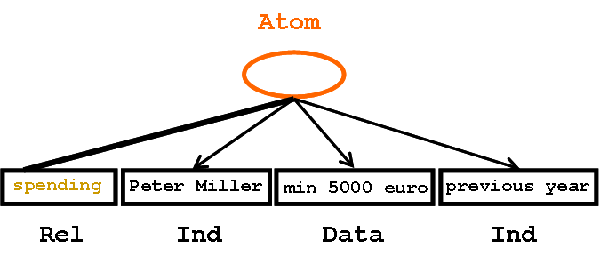
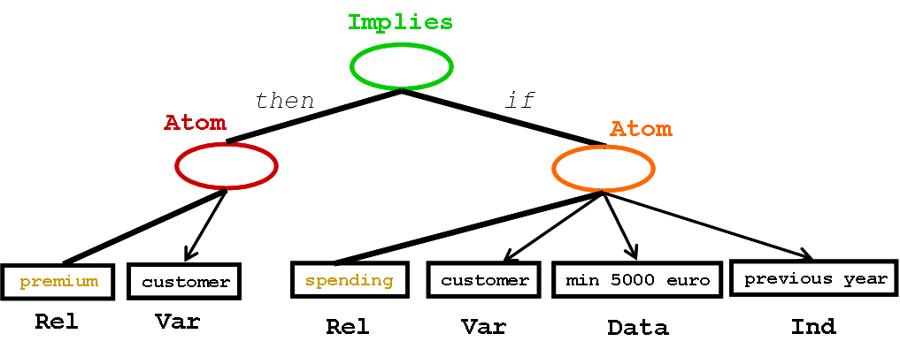
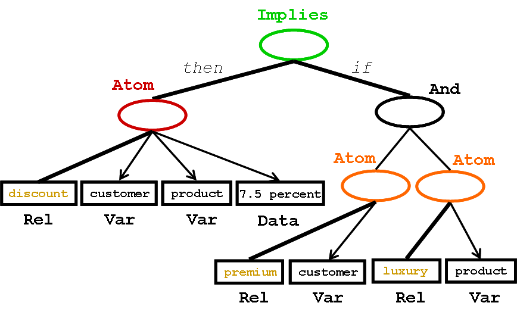
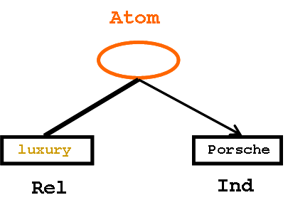
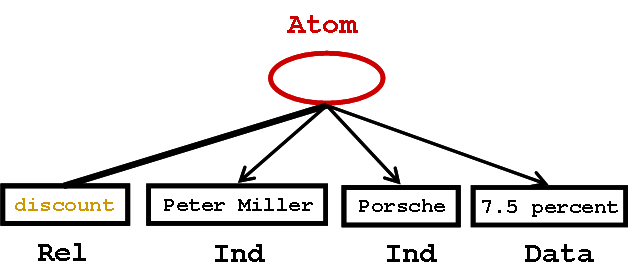

Copyright 2011, The RuleML Initiative.
This document is a primer on RuleML 1.0 (Rule Markup Language, which has also become a Rule Modeling Language and a Rule MetaLogic). RuleML is being used for sharing rule bases in XML and publishing them on the Web. RuleML constitutes a layered family of rule sublanguages of which this primer focuses Datalog. The XML serialization of Datalog will be visualized with OrdLab trees, developing the discount example from its parts.
RuleML as a non-profit organization has been the driver of Web rule research, building interoperation bridges between other Web rule languages, partnering with standards bodies, and working with industry. RuleML as a de facto language standard has developed a RuleML version 1.0 for Derivation RuleML, whose Datalog sublanguage will be introduced here.
The Datalog (function-free) sublanguage of Horn logic is at the semantic foundation of RuleML. Datalog is the language in the intersection of SQL and Prolog. It can thus be considered as the subset of logic programming needed for representing the information of relational databases, including (recursive) views. That is, in Datalog we can define facts, corresponding to explicit rows of relational tables (extensional definition), and rules, corresponding to tables defined implictly by views (intensional definition).
Datalog RuleML, as a markup language, can conveniently serialize relational information where all of the columns are natural-language phrases. To explain the Datalog features, we will develop a small example formalizing natural-language business rules in RuleML. This example correspond to the 'Eligibility' Category of Terry Moriarty's Business Rule Classification.
Consider the English sentence
"Peter Miller's spending has been min 5000 euro in the previous year."
This ternary 'spending' relationship between the individual Peter Miller, the lower bound of min 5000 euro, and the temporal reference to the previous year can be serialized as the following Datalog RuleML fact. Here tags -- similar to non-terminals in linguistics -- directly mark up PCDATA (Parsed Character Data) of the surface sentence -- similar to linguistic terminals:
<Atom> <Rel>spending</Rel> <Ind>Peter Miller</Ind> <Data>min 5000 euro</Data> <Ind>previous year</Ind> </Atom>
This XML fact serialization can thus be visualized as a kind of linguistic parse tree, which we call an Order-Labeled (OrdLab) Tree. Here tags label both inner nodes (oval, RDF-like anonymous resources), e.g. with 'Atom' (atomic formula), and leaf nodes (rectangular, RDF-like literals containing PCDATA), e.g. with 'Rel' (relation constant), 'Ind' (individual constant), or 'Data' (data constant):

Going through the tags from inside out, we find that "spending" is marked up as the relation name (table name) of the fact: <Rel>spending</Rel>. On the same level, the three phrases "Peter Miller", "min 5000 euro", and "previous year" are marked up as individual constants that are the three arguments (table columns) of the relation, in the given order: <Ind>Peter Miller</Ind>, <Data>min 5000 euro</Data>, and <Ind>previous year</Ind>. The entire relation application constitutes an atomic formula, marked up by <Atom> ... </Atom>.
In the above Datalog markup, the three top-level "spending" arguments are not further analyzed; they are considered as just individual or data constants. For identification purposes, they would need to be repeated verbatim by a query that is to retrieve the above fact (as illustrated by the query in the if part of rule below). A step-wise refining analysis could exhibit the internal structure and natural-language meaning of the basic three arguments using further, auxiliary, arguments, or proceeding from Datalog to Hornlog (function-ful) RuleML, with all steps marked up in RuleML.
Notice that in Datalog RuleML a relation can be n-ary, i.e. have any fixed number, n = 0, 1, 2, 3, ..., of arguments. A Datalog restricted to unary and binary relations is an important special case, e.g. for combining RuleML with OWL, as in SWRL. While the above markup uses one 3-ary"spending" relation, it could also be reduced to three binary relations branching off from an individual constant that stands for the ternary relationship, as suggested by the above RDF-oriented XML visualization and explained in a W3C Working Group Note. However, to preserve the expressiveness of the relational model for databases and SQL as well as of Prolog, Datalog RuleML permits the straight representation of n-ary relations, as visualized with directed hyperarcs in Grailog. Moreover, Datalog RuleML provides for the markup of SQL-style null values via empty individuals, <Ind/>.
Now consider the English sentence
"A customer is premium if their spending has been min 5000 euro in the previous year."
This can be marked up as the following Datalog RuleML rule (an implication):
<Implies>
<then>
<Atom>
<Rel>premium</Rel>
<Var>customer</Var>
</Atom>
</then>
<if>
<Atom>
<Rel>spending</Rel>
<Var>customer</Var>
<Data>min 5000 euro</Data>
<Ind>previous year</Ind>
</Atom>
</if>
</Implies>
Like the fact, this XML rule serialization can be visualized as an OrdLab tree:

Looking at these tags, notice that RuleML follows the Java class-vs.-method naming convention by distinguishing upper-case node tags from lower-case edge tags. The atomic formula within the <if> edge of the <Implies> is like the <Atom> constituting the above fact, except that <Ind>Peter Miller</Ind> is replaced with <Var>customer</Var>, the markup of a variable named "customer". This variable also occurs in an <Atom> within the <then> edge of the <Implies>, which applies the unary relation<Rel>premium</Rel> to <Var>customer</Var>.
The rule and the fact can be used together for a first derivation example: The rule's <if> matches the fact, binding <Var>customer</Var> to <Ind>Peter Miller</Ind>; using this binding to instantiate the same variable in the rule's <then>, a new <Atom> is derived expressing that <Ind>Peter Miller</Ind> is a <Rel>premium</Rel> customer.
Besides using a single atomic formula in the <if>, a Datalog RuleML rule can also use an entire conjunction of atoms. This will allow complex conditions via 'and-ed' atoms, which can involve various variables.
As an example with an <if> 'and-ing' two atoms, consider the English sentence
"The discount for a customer buying a product is 7.5 percent if the customer is premium and the product is luxury."
It can be marked up as the following Datalog RuleML (implication) rule:
<Implies>
<then>
<Atom>
<Rel>discount</Rel>
<Var>customer</Var>
<Var>product</Var>
<Data>7.5 percent</Data>
</Atom>
</then>
<if>
<And>
<Atom>
<Rel>premium</Rel>
<Var>customer</Var>
</Atom>
<Atom>
<Rel>luxury</Rel>
<Var>product</Var>
</Atom>
</And>
</if>
</Implies>
Visualized as an OrdLab tree, this XML serialization contains an 'and' branch with atomic subtrees:

The main <Implies> tag here has an <if> whose <And> conjoins the <Rel>premium</Rel> atom of the earlier rule and a similar <Rel>luxury</Rel> atom; they are used for tests over two different variables. The rule's <then> is an atom applying a "discount" relation to these two variables and to a data constant that marks up "7.5 percent".
While <Rel>premium</Rel> was defined by our first rule, <Rel>luxury</Rel> could be (partially) defined as
"A Porsche is luxury."
by another Datalog RuleML fact:
<Atom> <Rel>luxury</Rel> <Ind>Porsche</Ind> </Atom>
Again, this XML serialization can be visualized as an OrdLab tree:

The new rule and fact can augment our earlier rule and fact for a chaining derivation example as follows: The first conjunct of the <Rel>discount</Rel> rule's <if> chains to the <Rel>premium</Rel> rule, which succeeds as shown earlier, binding<Var>customer</Var> to <Ind>Peter Miller</Ind>. The second conjunct just matches the <Rel>luxury</Rel> fact, binding <Var>product</Var> to <Ind>Porsche</Ind>. So, the <Rel>discount</Rel> rule succeeds with those bindings, proving an atom shown here with its translation to English:
"The discount for Peter Miller buying a Porsche is 7.5 percent."
This derived atom markup may be stored for further processing:
<Atom> <Rel>discount</Rel> <Ind>Peter Miller</Ind> <Ind>Porsche</Ind> <Data>7.5 percent</Data> </Atom>
As always, such an XML serialization can be visualized as an OrdLab tree:

Notice that we explained the first rule in a bottom-up manner and the second rule in a top-down manner. Actually, each rule can be used in both ways; by default, RuleML is neutral with respect to rule use direction.
RuleML uses Datalog as part of its family of sublanguages. The XML syntax of RuleML 1.0 is defined by XML schemas and Relax NG schemas. Its presentation POSL can be translated online to RuleML/XML. The semantics of Datalog RuleML and Hornlog RuleML employ Herbrand models. Various Datalog and Hornlog RuleML implementations exist, including the (Naf Hornlog) RuleML reference implementation OO jDREW.